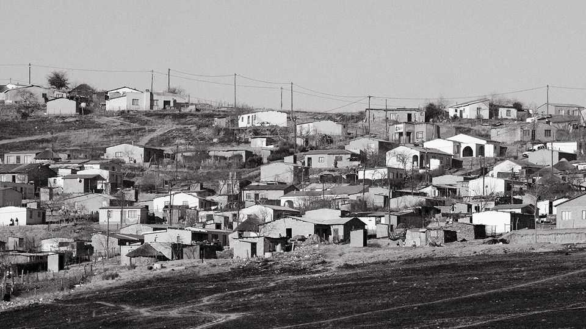
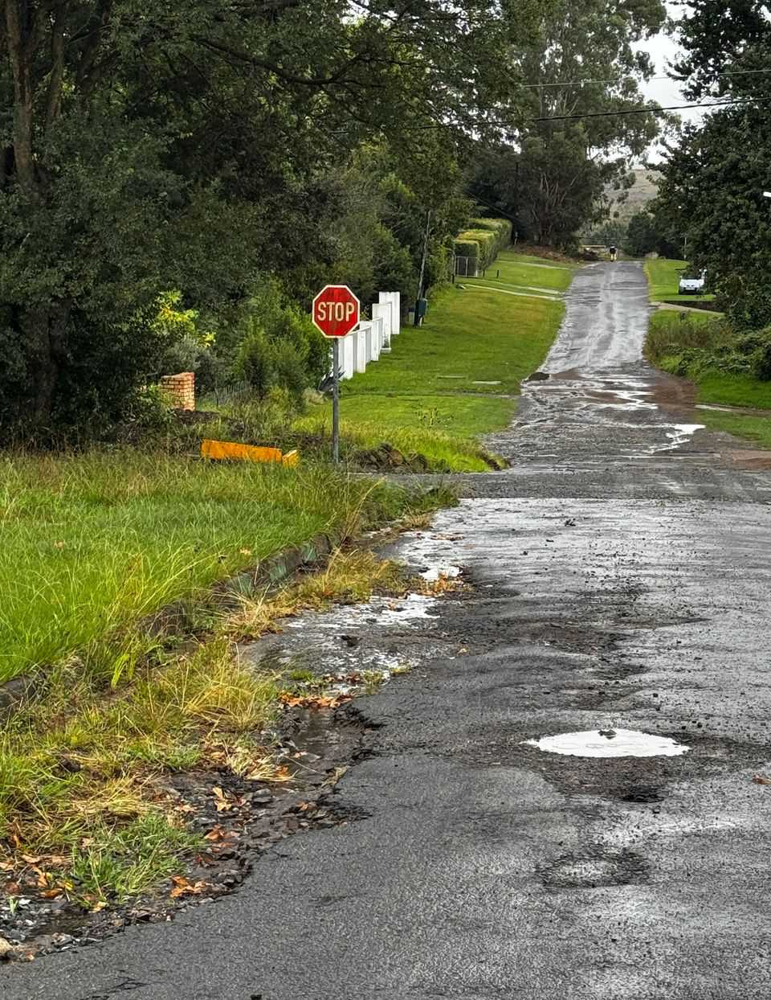

State capture is holding back South Africa
Unhappy voters need to see that political choices can make a difference

Aug 20th 2026
“Yo, there’s a lot that’s bad in this community,” sighs Neliswa Radebe. The 19-year-old is one of 13 people living in a small ramshackle house above a motorway in Mpofana, a municipality in eastern South Africa. She lists the problems: piped water is rare; rubbish collection is sporadic; and there is a leak dripping on the mattress used by her bed-bound adopted mother. Outside is no better. The roads are more pothole than tarmac; a resident died recently when a car careered into them. There are no playgrounds, football fields, netball courts or youth centres. Squatters have overrun Mpofana’s dilapidated town hall, on the other side of the motorway.
Mpofana is part of a bigger problem. Most of South Africa’s municipalities—the units of local government meant to deliver basic services—are a mess. Their failure makes life worse, especially for the poor, and stymies a wider economic recovery. That is weakening the African National Congress (ANC), the once-mighty party. If the ANC receives the expected drubbing at local elections on November 4th, it may shake up South African politics.
Under apartheid, local government reflected the country’s systemic racism. White areas were home to commercial hubs and rich suburbs; business and property taxes were spent on infrastructure that would not have been out of place in California (swimming pools that used a lot of water). Black areas were marginalised, with infrastructure that looked more like that elsewhere in Africa, rather than in its industrial heart (tap water was a luxury).
After Nelson Mandela was elected in 1994 his government abolished racially segregated local authorities, creating ostensibly integrated municipalities. Today these range in size from Johannesburg, the commercial capital, to units like Mpofana that comprise a small town and rural areas. All are supposed to fund themselves through property taxes, business rates and charges for water, electricity and waste collection. The poorest also get a grant from the central government to fill any gap between revenue and expenditure.
In reality, many do not balance the books. In the financial year that ended in June 2025 45% of municipalities passed unfunded budgets. Some 30%, including Mpofana, have done so in each of the past four years. Last month Enoch Godongwana, the finance minister, said he would withhold grants to the worst-offending places to instil fiscal discipline.

Public-sector trade unions argue that the grant increases have lagged behind the rising costs of providing services. But the bigger issue is that money is wasted or stolen. Just 15% of municipalities achieved clean financial audits in the auditor-general’s latest report, in June. Since 2021, “wasteful”, “irregular” or “unauthorised” spending has added up to 287bn rand ($18bn), more than South Africa has spent on defence in the same period. In a grimly symbolic case of apparent municipal graft, ten individuals, including local officials, allegedly pilfered funds designated for VIP (ventilated improved pit) toilets in Amathole in the Eastern Cape, one of the poorest places in the country.
Municipalities collectively owe more than 110bn rand to Eskom, the state-run utility, and 30bn to bulk-water suppliers. These debts threaten the “financial sustainability” of the economy, argues Mr Godongwana. His decision to suspend grants was partly in order to use the money to pay these bills. (On July 31st he began reinstating the grants, with new conditions.)
As if taking their cue from politicians, residents often do not pay up either. Almost half the water procured by municipalities is “lost”: it flows out of broken pipes or is never paid for. In Mpofana 60% of electricity is in effect stolen. “Honestly, we do not pay,” Ms Radebe admits, glancing behind her at the coils of rusty cables that lead to an illegal connection outside.
Yet some municipalities work. South of Mpofana is Umngeni, which in 2021 ditched the ANC and elected a mayor from the Democratic Alliance (DA), the second-largest party. Chris Pappas has been credited with an overhaul. In July the FW de Klerk Foundation, an NGO, rated Umngeni as the seventh-best-run municipality in a sample of 50, ahead of Cape Town.
Today Umngeni has funded budgets and receives clean audits. Poor-performing bureaucrats have left or been fired. Mr Pappas has cracked down on inflated procurement schemes. The savings have helped to erect 3,000 new streetlights, fill potholes and expand a scheme for the very poor that subsidises small amounts of water and electricity. The once-dirty town centre is clean. New firms have moved in. More than 2,000 net new jobs have been created in an area of 100,000 people.
In Zanzene Village, a poor part of Umngeni, residents seem to appreciate the changes. “Everything is good: the roads, the water, we even pay for electricity,” says Nomfundo Buthelezi, explaining that she does not mind so long as the money is well spent. Musa Mchunu, a gardener, notes there is a new football pitch and a youth centre. “Most importantly,” he adds, “the municipality now responds—we no longer get the blue ticks,” a reference to WhatsApp messages that are read but ignored.
The DA hopes that a record of good governance will increase its vote share, including among black voters, who historically have opted for the ANC or its offshoots. Among its targets is Johannesburg, where one recent poll has the DA on 42%, up from 26% at the 2021 local election. The ANC, which has run the city into the ground, is on 18%, barely half the 34% it won in 2021.
Such highs will not be reached everywhere in South Africa. In the recent poll the ANC still remains ahead of the DA (34% versus 27%) on average. Race remains highly predictive of whether a voter opts for the DA, even though it runs just 12% of all municipalities but accounts for most of the clean audits.
Yet 32 years after the end of white rule, when most South Africans are despondent about democracy, showing that political choices can make a difference is crucial. Mr Mchunu, a former ANC member, says that he did not vote for Mr Pappas last time, but may do so in November. “I tell my sons that apartheid is over. What matters is not race but changing the country.” ■
Sign up to the Analysing Africa, a weekly newsletter that keeps you in the loop about the world’s youngest—and least understood—continent.